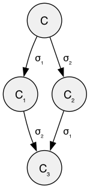
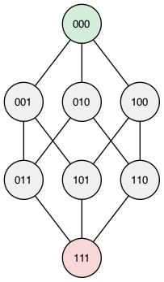
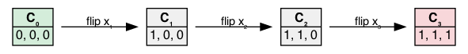
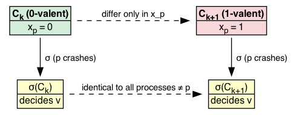
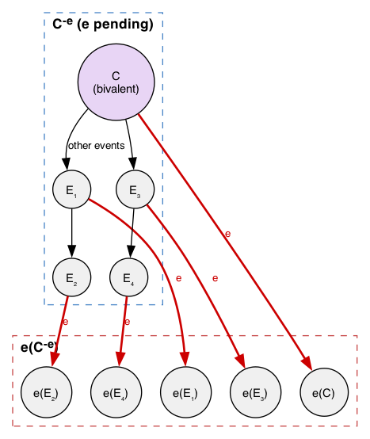
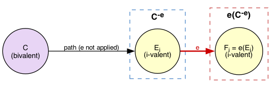
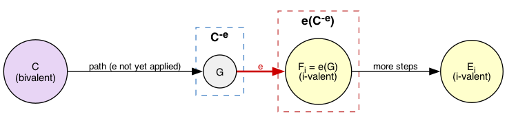
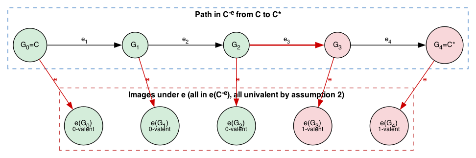
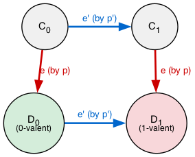
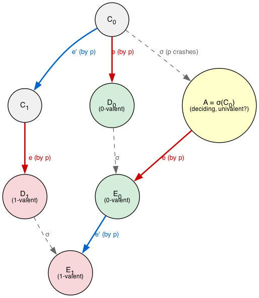

Impossibility of Distributed Consensus with One Faulty Process
Original paper: [1]
Summary
- This paper shows that it is impossible for a deterministic algorithm to terminate while tolerating a single fault in an asynchronous network.
Proof
System
System model. A consensus protocol \(P\) is an asynchronous system of \(N\) processes \((N \ge 2)\). Each process \(p\) has:
- one-bit input register \(x_{p}\)
- an output register \(y_{p}\) with values in \(\{b, 0, 1\}\)
- an unbounded amount of internal storage
The output register is write-once.
- Internal state. The internal state consists of:
- Input, output register
- Program counter
- Internal storage
- Initial state. This prescribes the initial values for all the internal states except for the input register.
- Decision states. These are states where the output register has values \(0\) or \(1\).
- Transition function. The consensus protocol \(P\) is specified by the transition functions associated with each process and the initial values of the input registers.
- Message. A message is a pair \((p,m)\), where \(p\) is the name of the destination process and \(m\) is a message value from a fixed universe \(M\).
- Message system. The message system maintains a multiset, called the message buffer of messages that have been sent but not yet delivered. It supports two abstract operations:
- \(send(p,m)\): Places \((p,m)\) in the message buffer
- \(receive(p)\): Deletes some message \((p,m)\) from the buffer and returns \(m\), in which case we say \((p,m)\) is delivered, or returns the special null marker \(\phi\) and leaves the buffer unchanged.
Configuration. A configuration consists of internal state of each process and the message buffer.
An initial configuration is one in which each process starts at an initial state and the message buffer is empty.
- Step. A step takes one configuration to another and consists of a primitive step by a single process \(p\). For a configuration \(C\), a step occurs in two phases.
- \(receive(p)\) is performed on the message buffer in \(C\) to obtain a value \(m\in M \cup \phi\).
- Depending on \(p\)'s internal state in \(C\) and on \(m\), \(p\) enters a new internal state and sends a finite set of messages to other processes.
- Event. Since the processes are deterministic, a step from configuration \(C\) to \(C'\) is completely determined by the pair \(e = (p,m)\), which we call an event. We define \(C' = e(C)\) and say that \(e\) was applied to \(C\).
- Schedule. A schedule from a configuration \(C\) is a finite or infinite sequence \(\sigma\) of events that can be applied in turn, starting from \(C\).
- Run. Let \(\sigma\) be a schedule (sequence of events) from configuration \(C\). The corresponding sequence of steps is called as a run.
- Reachability. For a finite schedule \(\sigma\) from a configuration \(C\), let \(\sigma(C)\) denote the resulting configuration. We say \(\sigma(C)\) is reachable from \(C\).
- Accessible configurations. If a configuration \(C\) can be reached from some initial configuration, then we say that \(C\) is accessible.
- Adjacent initial configurations. We say that initial configurations \(C\) and \(C'\) are adjacent if they differ only in the initial value \(x_{p}\) of a single proces \(p\).
- Non-faulty. A process \(p\) is non-faulty in a run provided that it takes infinitely many steps, i.e, does not crash. Otherwise, it is faulty.
- Admissible runs. A run is admissible provided that at most one process is faulty and that all messages sent to non-faulty processes are eventually delivered.
- Decidable runs. A run is a deciding run provided that some process reaches a decision state in that run.
- Decision value. A configuration \(C\) has decision value \(v\) if some process \(p\) is in a decision state with \(y_{p} = v\).
- Value set. Let \(C\) be a configuration. The set of decision values of configurations reachable from \(C\) is the value set \(V\).
- Valence. Let \(C\) be a configuration. We say that \(C\) is bi-valent, if the value set \(V\) of \(C\) has size \(2\), i.e., \(|V| = 2\). We say that \(C\) is univalent, $0$-valent, and $1$-valent respectively, if \(|V|=1\), \(V=\{0\}\) and \(V=\{1\}\).
- Partially correct. We say that a consensus protocol \(P\) is partially correct if:
- no accessible configuration has more than one decision value, and
- for each \(v\in \{0,1\}\), some accessible configuration has decision value \(v\).
- Correct protocol. A consensus protocol \(P\) is totally correct in spite of one fault if it is partially correct, and every admissible run is a deciding run.
Commutativity of schedules
Lemma 1. Suppose that from some configuration \(C\), the schedules \(\sigma_{1}\), \(\sigma_{2}\) lead to configurations \(C_{1}\), \(C_{2}\), respectively. If the sets of processes taking steps in \(\sigma_{1}\) and \(\sigma_{2}\) are disjoint, then \(\sigma_{2}\) can be applied to \(C_{1}\) and \(\sigma_{1}\) can be applied to \(C_{2}\), and both lead to the same configuration \(C_{3}\).

Why does this hold? Consider what \(\sigma_{1}\) and \(\sigma_{2}\) each touch:
- The internal state of the processes in their respective sets
- The messages in the buffer (sending and receiving)
Since the process sets are disjoint:
- Internal states are independent. \(\sigma_{1}\) only reads and writes the internal states of its processes. \(\sigma_{2}\) only reads and writes the internal states of its processes. Neither interferes with the other.
- Message buffer operations commute. \(send\) adds messages to a multiset; order of addition doesn't matter. \(receive\) by a process \(p\) only removes messages addressed to \(p\). Since the process sets are disjoint, \(\sigma_{1}\)'s receives never compete with \(\sigma_{2}\)'s receives for the same messages.
- Determinism closes the argument. Since processes are deterministic, each event \(e = (p, m)\) produces the same result regardless of what the other group did. So \(\sigma_{1}\) applied after \(\sigma_{2}\) sees the same internal states for its processes and the same messages available, producing the same transitions.
Therefore, starting from \(C\), doing \(\sigma_{1}\) then \(\sigma_{2}\) lands at the same configuration as doing \(\sigma_{2}\) then \(\sigma_{1}\).
What this means. If two groups of processes are working independently (no process appears in both schedules), it doesn't matter which group goes first, the system ends up in the same place. This is the formal basis for arguing that events by different processes can be reordered without changing the outcome.
Existence of bivalent configurations
Lemma 2. \(P\) has a bivalent initial configuration.
Proof. Assume for contradiction that every initial configuration is univalent. We derive a contradiction.
Step 1: Both valences exist
By partial correctness, both decision values \(0\) and \(1\) are reachable from some accessible configuration. So there exist both $0$-valent and $1$-valent initial configurations.
Step 2: Adjacent pair with opposite valence
There are \(2^{N}\) initial configurations in total (one per input vector in \(\{0,1\}^{N}\)). These form a hypercube where adjacent configurations (differing in one bit) are connected by edges:

Green \((000)\) is $0$-valent by validity; red \((111)\) is $1$-valent by validity. The other \(2^{N} - 2\) nodes are each either $0$-valent or $1$-valent (by our assumption that none is bivalent). Under this assumption, the valence must switch somewhere – but we don't know where.
The proof does not search all \(2^{N}\) configurations. It picks one path of \(N + 1\) adjacent configurations from all-\(0\) to all-\(1\), flipping one bit at a time:

This chain starts $0$-valent and ends $1$-valent. Each \(C_{k}\) is univalent (by assumption), so the valence is a sequence of $0$s and $1$s starting at \(0\) and ending at \(1\). There must exist some index \(k\) where \(C_{k}\) is $0$-valent and \(C_{k+1}\) is $1$-valent. This is guaranteed within the \(N + 1\) elements of the chain.
The critical adjacent pair:
These differ only in the input of process \(p\) (the process whose bit was flipped at step \(k\)).
Step 3: Crash \(p\) to get a contradiction
Now consider an admissible deciding run from \(C_{k}\) in which process \(p\) takes no steps (i.e., \(p\) is faulty by crashing immediately). Let \(\sigma\) be the associated schedule. Since \(\sigma\) involves no steps by \(p\), it can also be applied to \(C_{k+1}\) (by Lemma 1, \(p\)'s state is irrelevant to the other processes). The two runs are identical except for \(p\)'s internal state:

Since \(p\) takes no steps in either run, the other \(N - 1\) processes see exactly the same sequence of events and states. Both runs must reach the same decision value \(v\). But:
- If \(v = 1\), then \(C_{k}\) can reach decision \(1\), so \(C_{k}\) is not $0$-valent. Contradiction (or \(C_{k}\) is bivalent).
- If \(v = 0\), then \(C_{k+1}\) can reach decision \(0\), so \(C_{k+1}\) is not $1$-valent. Contradiction (or \(C_{k+1}\) is bivalent).
Either way, one of them is bivalent, contradicting our assumption that all initial configurations are univalent. \(\square\)
Preservation of Bi-valence
Lemma 3. Let \(C\) be a bivalent configuration of \(P\), and let \(e = (p, m)\) be an event that is applicable to \(C\). Let \(C^{-e}\) be the set of configurations reachable from \(C\) without applying \(e\), and let \(e(C^{-e}) = \{e(E) \mid E \in C^{-e} \text{ and } e \text{ is applicable to } E\}\). Then \(e(C^{-e})\) contains a bivalent configuration.
Understanding the sets
\(C\) is bivalent and \(e = (p, m)\) is a pending event (a message \(m\) waiting for process \(p\)). Since messages can be delayed arbitrarily, we can do many other things before \(e\) fires.
- \(C^{-e}\): Everything reachable from \(C\) while keeping \(e\) pending. Other processes take steps, other messages get delivered, but \(e\) stays in the buffer. Note that \(C \in C^{-e}\).
- \(e(C^{-e})\): Apply \(e\) to each configuration in \(C^{-e}\). This is the set of configurations you land in immediately after \(e\) finally fires.

The blue region is \(C^{-e}\): we explore freely while \(e\) stays pending. Each red arrow is \(e\) firing, mapping a configuration in \(C^{-e}\) to one in \(e(C^{-e})\).
Why is \(e\) applicable to every \(E \in C^{-e}\)? Because \(e = (p, m)\) means "process \(p\) receives message \(m\)." Since we never applied \(e\), the message \(m\) is still in the buffer at every configuration in \(C^{-e}\).
Proof (by contradiction)
Assume for contradiction that \(e(C^{-e})\) contains no bivalent configurations, i.e., every \(D \in e(C^{-e})\) is univalent.
Part 1: Both valences exist in \(e(C^{-e})\)
Since \(C\) is bivalent, there exist $i$-valent configurations \(E_{i}\) reachable from \(C\), for \(i = \{0,1\}\). We need to show that \(e(C^{-e})\) also contains both valences. Let \(\sigma_{i}\) be a finite schedule from \(C\) to \(E_{i}\). Either \(\sigma_{i}\) includes \(e\) or it does not:
Sub-case A: \(\sigma_{i}\) does not include \(e\)
Then \(E_{i} \in C^{-e}\), so we can apply \(e\) to get \(F_{i} = e(E_{i}) \in e(C^{-e})\). Since \(E_{i}\) is $i$-valent, every configuration reachable from \(E_{i}\) is also $i$-valent – including \(F_{i}\). So \(F_{i}\) is $i$-valent.

Sub-case B: \(\sigma_{i}\) does include \(e\)
Say \(\sigma_{i} = (e_{1}, \ldots, e_{k-1}, e, e_{k+1}, \ldots)\) where \(e\) appears at position \(k\). The path of configurations is:
\(C \xrightarrow{e_{1}} \cdots \xrightarrow{e_{k-1}} G \xrightarrow{e} F_{i} \xrightarrow{e_{k+1}} \cdots \rightarrow E_{i}\)
- \(G \in C^{-e}\): the events \(e_{1}, \ldots, e_{k-1}\) were all applied before \(e\), so \(G\) was reached from \(C\) without applying \(e\). That is exactly the definition of \(C^{-e}\).
- \(F_{i} = e(G) \in e(C^{-e})\): since \(G \in C^{-e}\) and we apply \(e\) to it, \(F_{i}\) is in \(e(C^{-e})\) by definition.
- \(F_{i}\) is $i$-valent:
- \(F_{i}\) is univalent (not bivalent) – this is our contradiction assumption that every element of \(e(C^{-e})\) is univalent.
- \(E_{i}\) is reachable from \(F_{i}\) (via the remaining events \(e_{k+1}, \ldots\)), and \(E_{i}\) is $i$-valent.
- If \(F_{i}\) were $j$-valent with \(j \neq i\), then every configuration reachable from \(F_{i}\) would also be $j$-valent – but \(E_{i}\) is $i$-valent. Contradiction. So \(F_{i}\) must be $i$-valent.

In either sub-case, we find an $i$-valent configuration \(F_{i}\) inside \(e(C^{-e})\). Doing this for both \(i = 0\) and \(i = 1\), we conclude that \(e(C^{-e})\) contains both $0$-valent and $1$-valent configurations.
Part 2: Find neighbors with opposite valence
Where we are. We are inside a proof by contradiction with two active assumptions:
- \(C\) is bivalent and \(e = (p, m)\) is pending.
- (Contradiction assumption) Every configuration in \(e(C^{-e})\) is univalent (either $0$-valent or $1$-valent, never bivalent).
From Part 1, we know \(e(C^{-e})\) contains both a $0$-valent and a $1$-valent configuration.
Goal: Find two configurations in \(C^{-e}\) that are exactly one step apart and whose images under \(e\) have opposite valence.
Step 1: Find a path where the valence of \(e(\cdot)\) changes. From Part 1, there exist \(C_{a}, C_{b} \in C^{-e}\) such that \(e(C_{a})\) is $0$-valent and \(e(C_{b})\) is $1$-valent. Now \(C\) itself is in \(C^{-e}\), and \(e(C)\) is either $0$-valent or $1$-valent (by assumption 2). Pick whichever of \(C_{a}, C_{b}\) gives the opposite valence from \(e(C)\); call it \(C^{*}\):
- If \(e(C)\) is $0$-valent, set \(C^{*} = C_{b}\) (so \(e(C^{*})\) is $1$-valent).
- If \(e(C)\) is $1$-valent, set \(C^{*} = C_{a}\) (so \(e(C^{*})\) is $0$-valent).
Either way: \(e(C)\) and \(e(C^{*})\) have opposite valence.
Step 2: Walk the path and find the switch. Since \(C^{*} \in C^{-e}\), it is reachable from \(C\) without applying \(e\). Let the witnessing path be:
\(C = G_{0} \xrightarrow{e_{1}} G_{1} \xrightarrow{e_{2}} \cdots \xrightarrow{e_{n}} G_{n} = C^{*}\)
Every \(G_{j}\) is in \(C^{-e}\) (because no event in this path is \(e\) – that is what "reachable without applying \(e\)" means). So \(e(G_{j}) \in e(C^{-e})\), and by assumption 2, each \(e(G_{j})\) is univalent – either $0$-valent or $1$-valent.
Now consider the sequence of valences: the valence of \(e(G_{0})\), the valence of \(e(G_{1})\), …, the valence of \(e(G_{n})\). This is a sequence of $0$s and $1$s where:
- The first entry and the last entry are different (by our choice of \(C^{*}\)).
Therefore there exists an index \(j\) where the valence of \(e(G_{j})\) differs from the valence of \(e(G_{j+1})\).

In this example: \(e(G_{0}), e(G_{1}), e(G_{2})\) are all $0$-valent (green) and \(e(G_{3}), e(G_{4})\) are $1$-valent (red). The switch happens between \(G_{2}\) and \(G_{3}\) (bold red edge \(e_{3}\)). We set \(C_{0} = G_{2}\), \(C_{1} = G_{3}\), and \(e' = e_{3} = (p', m')\).
Result of Part 2: We have neighbors \(C_{0}\) and \(C_{1} = e'(C_{0})\) in \(C^{-e}\), where:
- \(D_{0} = e(C_{0})\) is $0$-valent
- \(D_{1} = e(C_{1})\) is $1$-valent
(If the switch went \(1 \to 0\) instead, just swap the labels.)
Part 3: Derive a contradiction
Where we are. We have neighbors \(C_{0}, C_{1} = e'(C_{0}) \in C^{-e}\), where \(e' = (p', m')\), such that:
- \(D_{0} = e(C_{0})\) is $0$-valent
- \(D_{1} = e(C_{1})\) is $1$-valent
We now show this is impossible, by considering two cases based on whether \(e = (p, m)\) and \(e' = (p', m')\) involve the same process or not.
Case 1: \(p' \neq p\) (different processes)
The event \(e = (p, m)\) and the neighboring step \(e' = (p', m')\) involve different processes. By Lemma 1 (commutativity), they commute. This gives us a diamond:

By commutativity: \(D_{1} = e(C_{1}) = e(e'(C_{0})) = e'(e(C_{0})) = e'(D_{0})\).
So \(D_{1}\) is a successor of \(D_{0}\). But \(D_{0}\) is $0$-valent, meaning every configuration reachable from \(D_{0}\) leads to decision \(0\). Yet \(D_{1} = e'(D_{0})\) is $1$-valent. Contradiction. \(\square\)
Case 2: \(p' = p\) (same process)
Both \(e = (p, m)\) and \(e' = (p, m')\) involve process \(p\). We cannot use commutativity directly (same process). Instead, we crash \(p\) and use Lemma 1 indirectly.
Step 1: Construct \(\sigma\) (a schedule where \(p\) crashes).
\(P\) is totally correct in spite of one fault. So if \(p\) crashes at \(C_{0}\), the remaining \(N - 1\) processes must still reach a decision in every admissible run. Therefore there exists a finite schedule \(\sigma\) from \(C_{0}\) such that:
- \(\sigma\) involves only processes other than \(p\) (since \(p\) has crashed).
- \(\sigma\) reaches a deciding configuration.
Let \(A = \sigma(C_{0})\). The run from \(C_{0}\) via \(\sigma\) is a deciding run, so some process \(q \neq p\) has written a value to its output register by the time we reach \(A\). Since the output register is write-once, this decision is irrevocable: every configuration reachable from \(A\) still has \(q\) decided on that value. Therefore \(A\) is univalent.
Step 2: Why \(\sigma\) commutes with \(e\) and \(e'\).
\(\sigma\) involves no steps by \(p\). Both \(e = (p, m)\) and \(e' = (p, m')\) involve only process \(p\). The set of processes in \(\sigma\) and the process in \(e\) (or \(e'\)) are disjoint. By Lemma 1 (commutativity of disjoint schedules):
- \(\sigma(e(X)) = e(\sigma(X))\) for any configuration \(X\) where both are applicable.
- \(\sigma(e'(e(X))) = e'(e(\sigma(X)))\) similarly.
In words: it doesn't matter whether we do \(\sigma\) first and then \(e\), or \(e\) first and then \(\sigma\) – we reach the same configuration. This is because \(\sigma\) and \(e\) touch different processes.
Step 3: Trace the equalities.

Reading the diagram:
- Gray dashed arrows (\(\sigma\)): schedule where \(p\) takes no steps (crashed).
- Red arrows (\(e\)): event \(e = (p, m)\).
- Blue arrows (\(e'\)): event \(e' = (p, m')\).
Now we trace two paths to show that both decisions are reachable from \(A\):
Path to $0$-valent:
- Start at \(C_{0}\). Apply \(e\) to get \(D_{0}\) ($0$-valent). \hspace{1em} [red arrow down-left]
- Apply \(\sigma\) to \(D_{0}\) to get \(E_{0} = \sigma(D_{0})\). \hspace{1em} [gray dashed arrow]
- \(E_{0}\) is $0$-valent (since \(D_{0}\) is $0$-valent and everything reachable from a $0$-valent configuration is $0$-valent).
- By commutativity: \(E_{0} = \sigma(e(C_{0})) = e(\sigma(C_{0})) = e(A)\). \hspace{1em} [so the red arrow from \(A\) reaches \(E_{0}\)]
Path to $1$-valent:
- Start at \(C_{0}\). Apply \(e'\) to get \(C_{1}\). Apply \(e\) to get \(D_{1}\) ($1$-valent). \hspace{1em} [blue then red]
- Apply \(\sigma\) to \(D_{1}\) to get \(E_{1} = \sigma(D_{1})\). \hspace{1em} [gray dashed arrow]
- \(E_{1}\) is $1$-valent (since \(D_{1}\) is $1$-valent and everything reachable from a $1$-valent configuration is $1$-valent).
- By commutativity: \(E_{1} = \sigma(e(e'(C_{0}))) = e'(e(\sigma(C_{0}))) = e'(e(A)) = e'(E_{0})\). \hspace{1em} [so the blue arrow from \(E_{0}\) reaches \(E_{1}\)]
Step 4: The contradiction.
From \(A\):
- Applying \(e\) reaches \(E_{0}\), which is $0$-valent.
- Applying \(e\) then \(e'\) reaches \(E_{1}\), which is $1$-valent.
Both decisions are reachable from \(A\), so \(A\) is bivalent.
But in Step 1 we established that \(A\) is the result of a deciding run from \(C_{0}\) – some process has already decided, so \(A\) must be univalent.
\(A\) cannot be both bivalent and univalent. Contradiction. \(\square\)
Conclusion of Lemma 3
Both cases yield a contradiction. Therefore \(e(C^{-e})\) must contain a bivalent configuration. \(\square\)
What this means. No single event can force the system out of bivalence. The adversary (scheduler) can always find a way to keep the system undecided: delay \(e\) long enough to reach the right configuration in \(C^{-e}\), then let \(e\) fire, landing in a bivalent configuration in \(e(C^{-e})\).